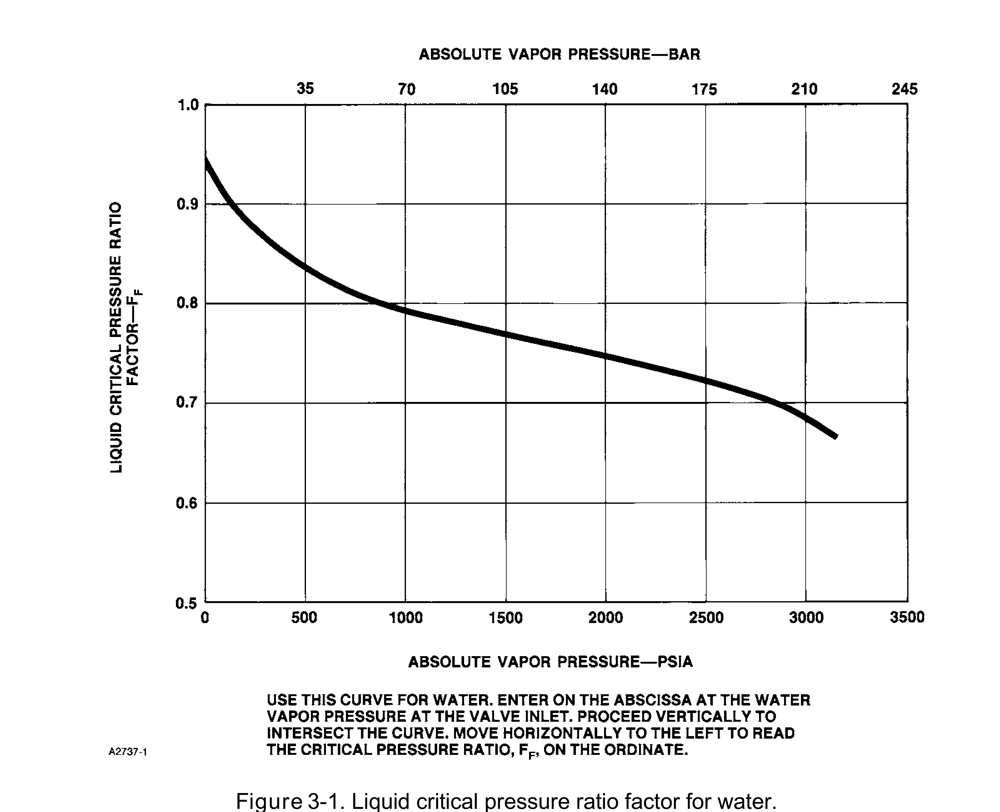
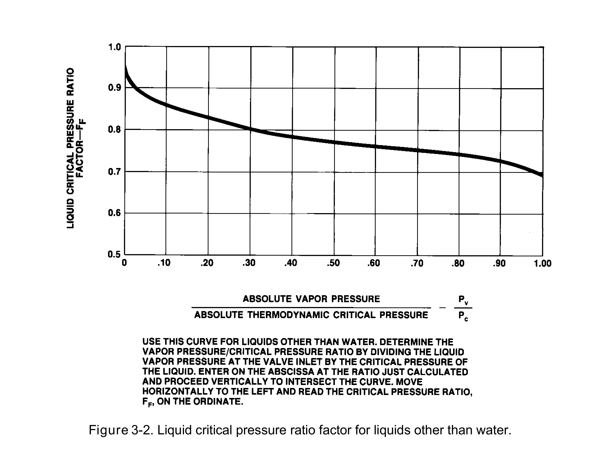

Reading FF — Water vs. Other Liquids
Water

Enter on the abscissa at the water vapor pressure at the valve inlet; proceed vertically to the curve, then horizontally left to read FF
Other Liquids

Divide vapor pressure by critical pressure (Pv/Pc) first, then read the same way against the 0–1.00 dimensionless scale
After Fisher Control Valve Sourcebook — Oil & Gas, Figs. 3-1 & 3-2 — used directly. Component Index: ogas-cmp-ff-chart-water, ogas-cmp-ff-chart-nonwater.